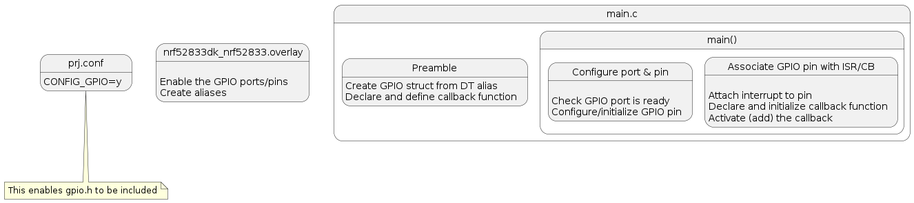
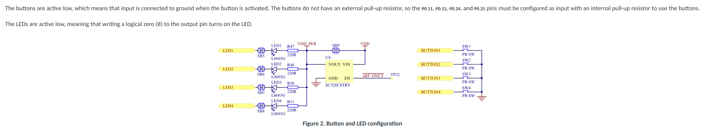

GPIO / ISR / Callbacks
BME554L - Spring 2026
Why Callbacks?
Interrupts & Callbacks
Interrupts

What do you do when the phone rings?
You might not be able to take a 2-hour phone call right when your phone rings, but you can:
Acknowledge that you received the call (e.g., thumbs-up emoji text message)
Add an item to your “to do” list (i.e., “queue”) to call the person back when you have time
What you do when the phone rings (the interrupt) is captured in a callback function.
ISR -> Callback Function
An interrupt can be used to call a callback function (“callback” = a function executed in response to an interrupt or event).
Need to execute the callback / ISR quickly to not paralyze the rest of
main()/ other threads from running, otherwise device is paralyzed from acting.Avoid calculations, significant IO, data Tx/Rx, etc.
Prefer simple actions, like toggling the state of a Boolean variable or posting an event.
Callback functions can be removed (gpio_remove_callback_dt()) or re-assigned from an ISR.
Button function can change as a function of the state of the system.
Button can be disabled or re-enabled based on the state of the system.
Zephyr Implementation
Overview
prj.conf- enable GPIO, enable logging librariesdevicetree.overlay- define GPIO pin as an input, define callback functionmain.c- initialize GPIO struct, initialize callback struct, associate callback with GPIO pin, define callback function, test for callback event state in your code

Devicetree (overlay): gpio-keys
The Devicetree is used to separate hardware-specific definitions from the firmware logic. Your development kit has a pre-defined devicetree in Zephyr that can be modified with an overlay file. This overlay file can be:
Manually edited (YAML format), or
Edited/visualized with the nRF DeviceTree extension in VS Code
/ {
aliases {
sw0: &button0;
}
buttons {
compatible = "gpio-keys";
button0: button_0 {
gpios = <&gpio0 8 (GPIO_PULL_UP | GPIO_ACTIVE_LOW)>;
label = "Push button";
};
};
};What is “ACTIVE” state?
GPIO_ACTIVE_LOW- button is active when pulled to low voltage (GND)GPIO_ACTIVE_HIGH- button is active when pulled to high voltage (VDD)

https://docs.nordicsemi.com/bundle/ug_nrf52833_dk/page/UG/dk/hw_buttons_leds.html
Collecting GPIO Information from the Devicetree into a struct
// create this struct before main()
// initialize GPIO struct
static const struct gpio_dt_spec sw0 = GPIO_DT_SPEC_GET(DT_ALIAS(sw0), gpios);GPIO_DT_SPEC_GET: macro to get GPIO information from the DT
DT_ALIAS: reference the pin of interest by an alias (sw0) in the DTgpio_dt_spec: struct prototype to store all of the information about this GPIO pin
sw0: name of the struct that will store the information about the GPIO pin
GPIO Input Functionality
Define Callback Function
// declare callback function
void sw0_callback(const struct device *dev, struct gpio_callback *cb, uint32_t pins);// initialize GPIO callback struct
static struct gpio_callback sw0_cb; gpio_callback: struct prototype is defined in gpio.h
sw0_cb: name of the struct based on thegpio_callbackprototype that will store the information about the callback function
// define callback function
void sw0_callback(const struct device *dev, struct gpio_callback *cb, uint32_t pins)
{
sw0_event = 1; // conditional statement in main() can now do something based on the event detection
// we can also use actual system kernel event flags, but this is simpler (for now)
}Constraints on Callback Functions
The contents of this function should consume minimal resources / time (i.e., cannot “block”).
Common action is to set an
eventor toggle the state of a Boolean, the value of which is reset after action is taken in the main code.
Within main()
// check if interface is ready
if (!device_is_ready(sw0.port)) {
LOG_ERR("gpio0 interface not ready."); // logging module output
return -1; // exit code that will exit main()
}
// configure GPIO pin
int err;
err = gpio_pin_configure_dt(&sw0, GPIO_INPUT);
if (err < 0) {
LOG_ERR("Cannot configure sw0 pin.");
return err;
}
// associate callback with GPIO pin
err = gpio_pin_interrupt_configure_dt(&sw0, GPIO_INT_EDGE_TO_ACTIVE); // trigger on transition from INACTIVE -> ACTIVE
// ACTIVE could be HIGH or LOW
if (err < 0) {
LOG_ERR("Cannot attach callback to sw0.");
}
gpio_init_callback(&sw0_cb, sw0_callback, BIT(sw0.pin)); // populate CB struct with information about the CB function and pin
gpio_add_callback_dt(sw0, &sw0_cb); // associate callback with GPIO pin
// test for the callback event state in your code...
while () {
if (sw0_event) {
do_something_less_trivial(); // this can take more time than the callback function
sw0_event = 0;
}
}Some useful API documentation
Placed outside of while loop
// declare second callback function
void sw0_callback_2(const struct device *dev, struct gpio_callback *cb, uint32_t pins);
// initialize second GPIO Callback Struct}
static struct gpio_callback sw0_cb_2;
// define second callback function.
void sw0_callback_2(const struct device *dev, struct gpio_callback *cb, uint32_t pins)
{
different_event = 1;
//This callback now toggles a different event trigger
}
//Associate the second callback function to the second callback struct
gpio_init_callback(&sw0_cb_2, sw0_callback_2, BIT(sw0.pin));The gpio_callback struct is used to store information about the callback function. This includes the function and the GPIO pin that it is associated with.
Once this is setup, the following syntax will switch the function associated with the button press:
gpio_remove_callback_dt(sw0, &sw0_cb);
gpio_add_callback_dt(sw0, &sw0_cb_2);Callback Functions Should Not Test For State
void callback_function(const struct device *dev, struct gpio_callback *cb, uint32_t pins)
{
if (state == AWAKE) {
state = NEW_STATE_A;
} else (state == SLEEP) {
state = NEW_STATE_B;
}
}Instead, have state-specific callbacks for each ISR:
Detach a callback function in an exit transition state.
Attach a new state-specific callback function in an entry transition state.
GPIO Output Functionality
Configure GPIO Pin as Output
// led is a gpio struct you have already created from the devicetree
// check if interface is ready
if (!device_is_ready(led.port)) {
LOG_ERR("gpio0 interface not ready."); // logging module output
return -1; // exit code that will exit main()
}
// configure GPIO pin
int err;
err = gpio_pin_configure_dt(&led, GPIO_OUTPUT_ACTIVE); // ACTIVE referes to ON, not HIGH
if (err < 0) {
LOG_ERR("Cannot configure GPIO output pin.");
return err;
}Set Pin State
#define SLEEP_TIME_MS 1000
bool led_state = true;
int ret = gpio_pin_toggle_dt(&led);
// can explicitly set with gpio_pin_set_dt(&led, led_state);
if (ret < 0) {
LOG_ERR("Cannot toggle GPIO output pin.");
return ret;
}
led_state = !led_state;
LOG_INF("LED state: %s\n", led_state ? "ON" : "OFF");
k_msleep(SLEEP_TIME_MS); // this is BLOCKINGInterrupt Configuration Flags
There are several other interrupt configuration flags that can be used to toggle the interrupt to trigger on falling edge, on both edges, etc.:
Relevant MACROS:
GPIO_INT_EDGE_[TO_ACTIVE/TO_INACTIVE/BOTH]GPIO_INT_DISABLE